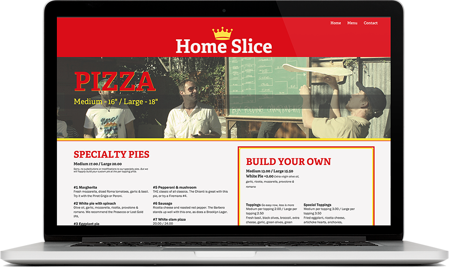

<div class="post-container">
	<div class="project">
		<h2>RESTAURANT MENU REDESIGN</h2>
		<h4>View <a href="http://andreastclair.github.io/tiy_assignments/day_26/home.html">Live</a> or check it out on <a href="https://github.com/andreastclair/tiy_assignments/tree/master/day_26">Github</a><h4>

		
		<h2>ABOUT THIS PROJECT</h2>
		<p>This project is a redesign of a local Austin pizza stable. Homeslice has been a fixture on South Congress Avenue for ten years, but unfortunately, their current site poorly reflects the restaurant's vibrant, warm, and unique vibe. My goal was to update this site so that their online presence more accurately portrays the experience that Austinites know and love. I began this project by researching the restaurant's beginnings, surveying pizza-eaters, and developing color profiles. A few sketches and mockups later, I dove into the code.</p>
		

		
		

	</div>	
</div>
	
	<!-- {% for project in site.pages %}
		<a href="{{project.url}}">{{project.item-title}}</a>
		
	{% endfor %}	 -->
	<!-- {{content}} -->


